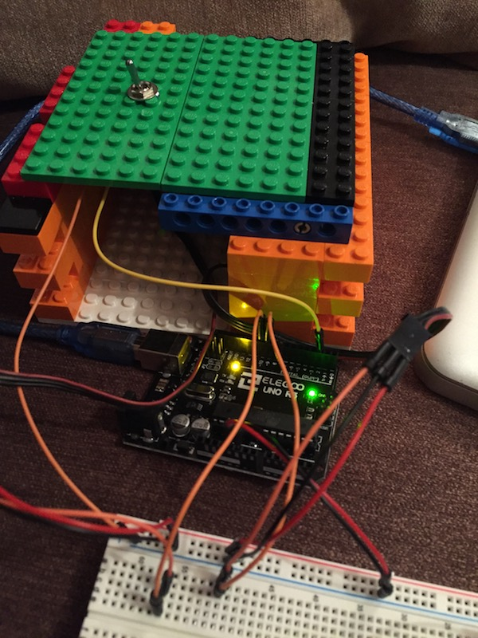

First Arduino/Servo test
I’ve popped the lid back on to the top of the box and used my breakout board as a ‘go between’ from the servos and Arduino. It all looks a bit messy at the moment, but this is only temporary.

Apologies for not showing you the inside – It’s tricky with the lid on. Both servos are now inside and in the correct position. My next task is to use the Arduino to slowly fine-tune the minimum and maximum servo positions. The ‘finger’ servo needs to push the switch just enough for it to trigger (without going too far and putting unnecessary stress on the servo), and the ‘lid’ servo needs to raise itself enough for the ‘finger’ to come out fully.
Some Time Later…
…and here it is. I’ve got the limits on the servos set, and the order they move in gives a good result. There’s no ‘funny business’ in the code yet – It simply detects when the switch is set and then triggers the servos to turn it off again.
This project is finally coming together!